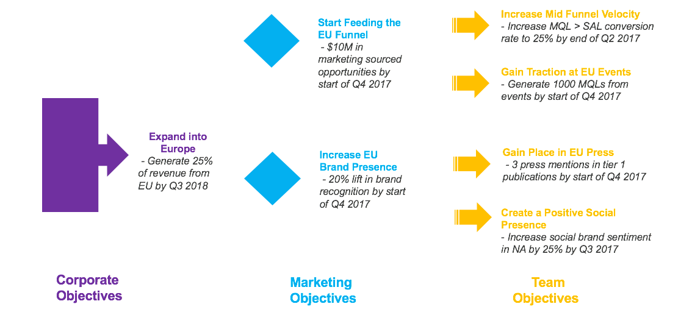

Align planning with strategy
Strategic Planner connects your organization's corporate goals to marketing investments by structuring them as objectives at the company, department, and team levels.
How Strategic Planner works
Objectives break down company goals into departmental and team goals. You enter objectives in Uptempo at three levels: company, marketing department, and team. You then assign team-level objectives to investments to show how each investment contributes to your organization's goals.
{kind=link}

For each objective, you specify Key Performance Indicators to make goals measurable. Objective owners maintain these throughout the year.
To reflect priority, you can reorder objectives within each column. For more information, see Objectives.
Relationships map how objectives cascade through the organization. You can create relationships between Corporate and Marketing objectives, and between Marketing and Team objectives, but not directly between Corporate and Team objectives. For more information, see Relationships.
Enable Strategic Planner
Strategic Planner is an optional feature that isn't active by default. Contact your Customer Success Manager to enable it.
When enabling the feature, define which users can access the Strategy tab. Discuss with your Customer Success Manager which users need edit access for objectives, relationships, and key results, and which should have read-only access.
Make sure users who manage investments know they need to link investments to objectives. This is how Uptempo records whether and how spending contributes to goals.
Best practices
Be collaborative
Strategic Planner is a collaborative tool where all users share the same investment plans. Consider using it in a meeting room like an electronic whiteboard to guide planning sessions and support quick decision-making.
Make time for planning
Planning takes time. Don't underestimate what it takes to think through what makes your business and teams successful. Brainstorming, collecting feedback, and discussing ideas are the first steps to crafting objectives that filter through all levels of your organization.
Think top-down
Setting clear objectives at the corporate level gives marketing departments and teams a foundation to align with. When objectives are visible, individuals can align their own goals accordingly.
Plan for measurable results
Set key results for objectives to make goals specific, measurable, and achievable. Quantifiable goals make it easier to track progress and evaluate completion.
Link objectives at every tier
Linking objectives across columns shows alignment visually and helps individuals see how their work contributes to key initiatives. Use the view connections mode to see which objectives are connected.
Next steps
Begin strategic planning by entering your Objectives.